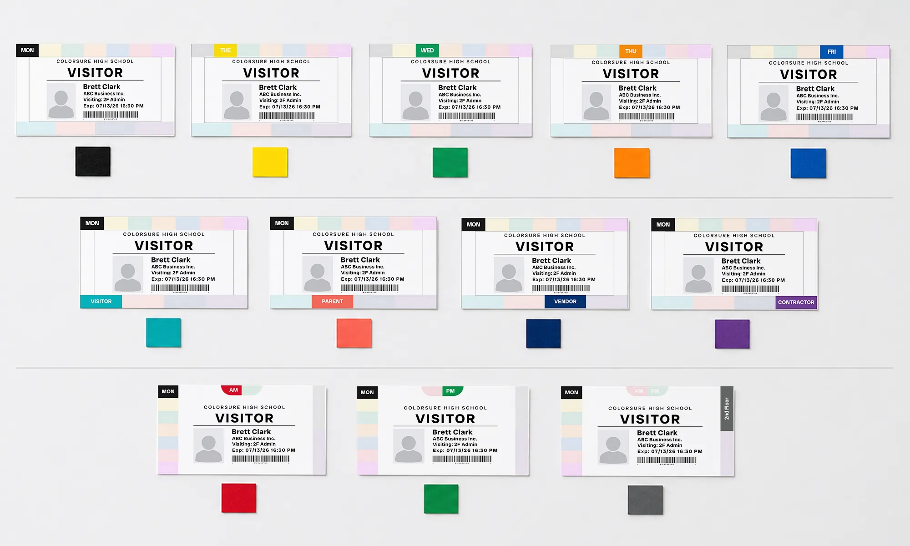
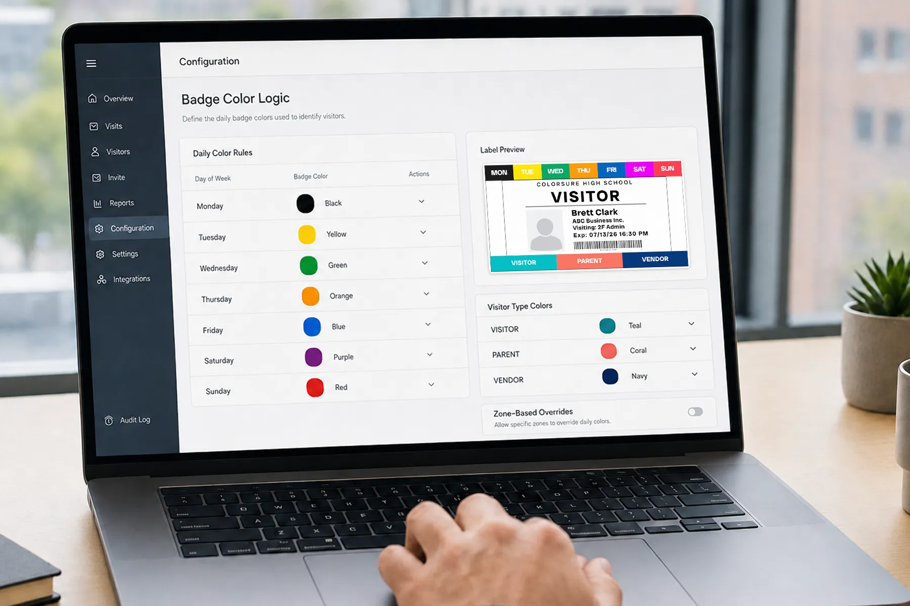

D
Day-of-week logic
Make validity intuitive with a consistent color cadence across the week so expired or wrong-day badges are easier to spot.
We help software providers and facility teams use color badge logic to improve recognition, strengthen workflows, and create a more differentiated visitor badge experience.
Text remains essential for specificity—but in live environments, color can compress meaning into a single glance. That helps staff and security teams prioritize attention before they read fine print.
ColorSure labels are designed to support that behavior: a disciplined palette, clear logic, and layouts that work with your platform’s print templates.

Each pattern below can be combined based on your customer segments and policy requirements.
Make validity intuitive with a consistent color cadence across the week so expired or wrong-day badges are easier to spot.
Support half-day visitor programs and timed access with a simple secondary visual channel.
Distinguish guests, vendors, contractors, volunteers, and other categories without crowding the badge face.
Pair color with permitted areas to reinforce policy at lobby, checkpoint, and floor level.
Color can strengthen visual features for analytics pipelines compared to monochrome text-only outputs.
Premium differentiated labels can flow through existing procurement and subscription motions.
Color badge logic is easy to demo in sales conversations and easy to document in admin guides. It gives customer success teams a clear story: faster recognition, clearer policies, and a premium upgrade path.

End users get practical value: less ambiguity at the threshold, faster scanning in busy lobbies, and clearer communication between reception and roaming staff.
We stay away from overstated claims—color supports awareness and interpretation; it works best as part of a complete visitor program.
View IndustriesWe can help you evaluate how color logic fits your current badge templates, printer ecosystem, and customer segments.
Color can communicate category and validity faster than reading multiple text lines—especially at a distance or in motion. It is designed to complement, not replace, the textual data on the badge.
Common patterns include day-of-week strips, AM/PM indicators, visitor-type bands, and zone cues. The right mix depends on your customers’ policies and how badges are printed.
Some partners adjust template logic or admin settings to map visitor rules to color output. The scope varies by platform. We help partners define practical mappings that are easy to support.
High-traffic and security-sensitive environments—such as schools, hospitals, corporate lobbies, and industrial sites—often see the clearest operational benefit from faster visual scanning.
Yes. Premium differentiated labels can be sold through existing hardware, supplies, or subscription channels—creating a natural recurring motion alongside your core platform.
Color can add a strong visual feature for certain camera and analytics workflows compared to monochrome text alone. Effectiveness depends on lighting, angle, and your pipeline—worth evaluating with sample imagery.